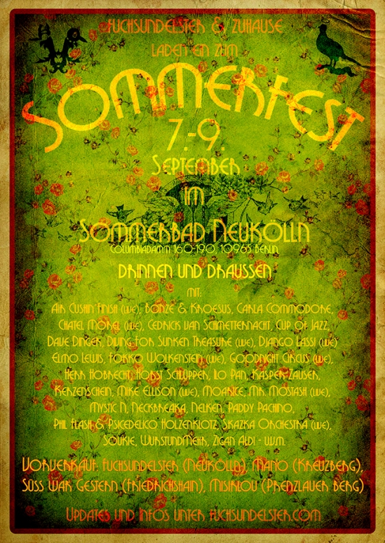
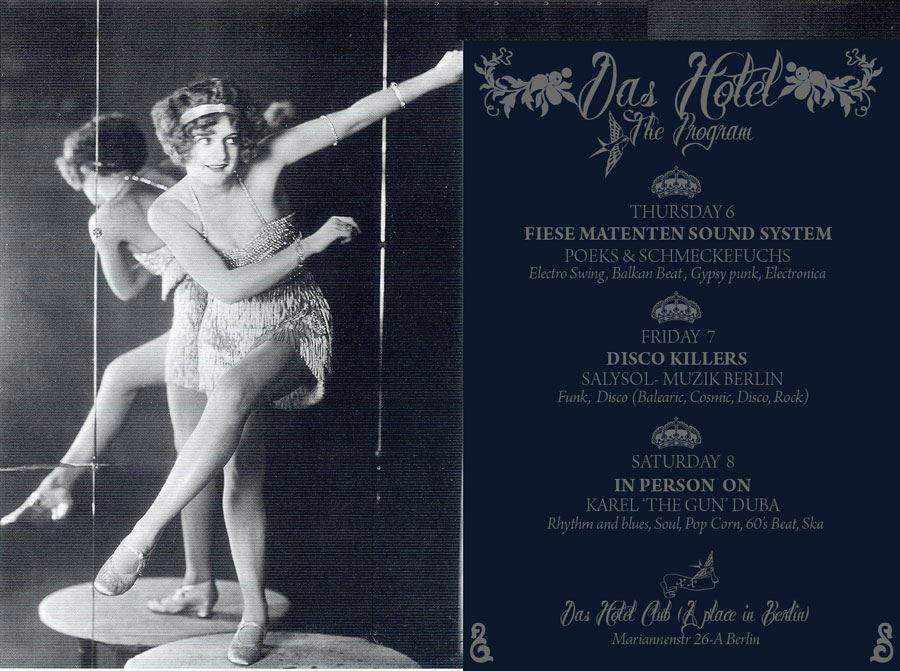
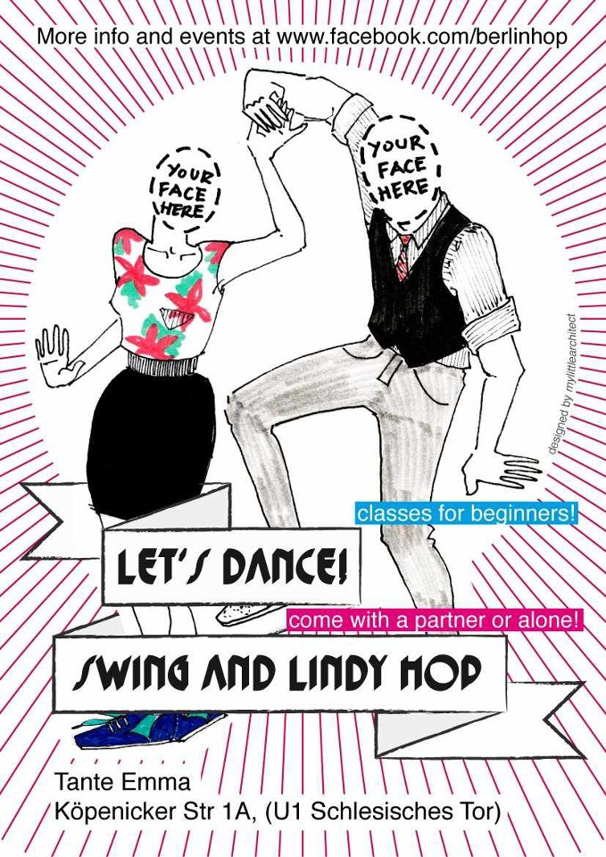

Gerade hab ich zufällig diesen Song von den Arctic Monkeys entdeckt. Zwar keine Swingmusik, aber schöne Steptanz und Jazz Steps …
Gerade hab ich zufällig diesen Song von den Arctic Monkeys entdeckt. Zwar keine Swingmusik, aber schöne Steptanz und Jazz Steps …
Am 9.9.2012 ist Günter Discher gestorben. Für mich war seine CD Compilation Swing Kids, Swing Hits der begeisterte Einstieg in die tanzbare Swingmusik. Der NDR hat einen Nachruf veröffentlicht. Ihr findet den kurzen Hörbeitrag auf der Website des NDR unter http://www.ndr.de/regional/hamburg/audio127941.html Auch die TAZ schreibt einen Artikel unter http://www.taz.de/!101430/

Wenn am Samstag der Horst fertig ist geht’s im Badehaus Szimpla mit Salon Obskur weiter:
22:00 – 00:00 *** Hotjazz und Swing mit 78 Umdrehungen auf Schellack ***
mit DJ CHRISTOPHER ROSE
00:00 – 01:30 *** live Gipsy Swing & Oriental Jazz auf glühenden Gitarren ***
mit DJANGO LASSI
01:30 – 02:30 *** Electro Swing Set ***
mit berüchtigtem DJ NECKBREAKA von den Dirty Honkers
02:30 – ??:?? *** Big Band und Dixieland zum Abhotten ***
mit DJ CUP OF JAZZ
hingehn!
https://www.facebook.com/events/355915427819031
Date/Time
Date(s) - 22. 09. 2012
22:00
Location
Badehaus Szimpla Musiksalon

NEUE BALBOA KURSE mit Anna & Matti
OBACHT! Ab Oktober unterrichten wir in der Balboa Botschaft.
Größte Änderung: kleinere Kurse! Und ein anderer Ort.
-> BALBOA I – Swingtanzkurs für Beginner und Auffrischer
ab 4.10. fünf mal Donnerstags 21:00 – 22:15 Uhr, 50€ p.Person
-> BALBOA II – mehr Balboa
ab 4.10. fünf mal Donnerstags 19:30 – 20:45 Uhr, 50€ p.Person
-> BALBOA III – noch mehr Balboa
ab 3.10. fünf mal Mittwochs 20:30 – 21: 45 Uhr, 50€ p.Person
Infos zu Balboa, zur Botschaft & zu den Kursen gibt’s auch rund um die Uhr auf http://www.balboa-botschaft.de
Anmeldungen bitte an: empfang@balboa-botschaft.de

Für alle, denen 7 Tage zu viel und 0 Tage zu wenig sind: der Wochenend-Pass fürs Balboa Castle Camp! Auf Wunsch sogar mit allem Schnulliwulli – also mit drei Parties, zwei Live-Bands, Unterkunft, Vollverpflegung, Gala-Dinner, Taster-Klassen und ner Menge Balboa.
Hier klicken und „Weekend Only“ mit der gewünschten Option auswählen, hui:
http://www.newswinggeneration.de/civicrm/event/register?reset=1&id=24&lcMessages=en_US
Date/Time
Date(s) - 14. 09. 2012.16. 09. 2012
All Day
Location
Balboa Castle Camp - Schloss Beesenstedt
https://www.facebook.com/GoldQuarz
Date/Time
Date(s) - 15. 09. 2012
16:00
Location
Teehaus am Englischen Garten

OMG! Frohlocker haben ’nen neuen Mix raus: Frohkolade. Schönes Swing-Gehopse-Zappel:
Trackliste:
http://frohlocker.de/wp/2012/08/njuuuu-dj-mix-frohkolade/

Fuchs und Elster Sommerfest im Sommerbad Neukölln – und da swingts gewaltigst! Ueber 35 musikalische Acts, also Bands und DJs und mehr als 10 kulturelle Acts, wie Installationen, Theater, Schattenspiel und vieles mehr. Auch Essen wirds ohne Ende geben, Chai, Tee, Kaffee, eben alles
WAS DAS HERZ BEGEHRT. Heute um 18 Uhr gehts los. WUNDERSCHOEN WIRDS.
Besonders freu ich mich auf:
Balkanesisches Fahrstuhlorchester (live)
Budzillus (live)
Cup Of Jazz
Django Lassi (live)
Goodnight Circus (live)
Herr Hobrecht
Horst Schluepper
Moarice The Swing King
Skazka Orchestra (live)
WurstUndMehr
yeah!
Date/Time
Date(s) - 07. 09. 2012.09. 09. 2012
All Day
Location
Sommerbad Neukoelln

Heute Nacht im Hotel! Fiese Matenten Sound System mit Poeks und Schmeckefuchs. Blechbläser satt.
3€ Eintritt.
Date/Time
Date(s) - 06. 09. 2012
21:00
Location
Das Hotel

Oh schönes Ding ams Samstag auch im Ballhaus – nicht ganz so klassisch tanzbar aber bestimmt trotzdem gut:
Take Jazz to the Groove, and Give Good Vibes to your Soul!
COOKING different styles of music and sounds with Jazz as the improvisation energy, spicing the whole thing with Afro, Latin, Funk, Soul hot beats.
Great Visuals, Awesome Djs, Fantastic Live Music with some of the best Musicians in town.
This monthly event will grow with always new styles combination, different guest musicians, to build up the Mighty Groove in some great SESSIONS
Super Live Band in the Ballroom———————————–
THE FAMILY & THE FELLOWS OF THE MIGHTY GROOVE
Afro//Cuban//Jazz//Funk//Soul//Eperimental
with:
Eric Vaughn -d, Thomas Steiger – b, Uri Gincel -keys,
Alfred Mehnert -perc, Ryo Fujimotto -beatbox loops
Aziz Sinka -djembe, Souleyman Balafon & Ngoni
Ben Kreaf -ts, Florian Menzel -tr, Dorrey Lyles -voc
and special guests:
Kelvin Sholar -synth and Ingrid Arthur -voc
Visuals by Vjen
dj Flowleo psyjazz/afrobeat/raregroove
second floor——————————————–
dj Seraphim – earlybossa/acidjazz/electroswing
dj Gyom – afro/electroswing/cumbia
Date/Time
Date(s) - 01. 09. 2012
21:00
Location
Ballhaus Mitte

Am Samstag ist es wieder soweit: Die „Electro Swing Revolution“-Party started im Astra Club. Mit neben diversen bekannten DJs u.a. zum ersten Mal in Deutschland den
Electro Swing-Exportartikel Nr. 1 aus Italien: Swingrowers
Bei einem kostenlosen Swing-Tanzkurs könnt ihr das Tanzbein und bei unserem großen Hula Hoop-Special die Hüften schwingen – und der Film „Icons of Swing“ lässt zeigt die besten Original-Tanzszenen der 30er bis 50er Jahre.
Weitere Informationen:
www.electroswing-revolution.de
www.electroswing-radio.com
Date/Time
Date(s) - 01. 09. 2012
20:00
Location
Astra Club
Wir bieten an zwei Montagabenden die Möglichkeit die ersten Schritte und Figuren in diesem sehr schönen, energieschonenden Swingtanz zu lernen.
Termin: 24.09. und 01.10. (jeweils Montag) von 20 – 22 Uhr
Ort: Souterrain der Weißen Villa, Josef-Nawrocki-Str. 10, 12587 Berlin-Friedrichshagen
Danach gibt es für alle Interessenten die Möglichkeit, beim schon bestehenden Balboa-Kurs mit einzusteigen.
Konditionen: 28,00 EUR/Person für beide Abende (zahlbar in bar vor Ort beim ersten Termin)
Paarweise Anmeldung ist schön, aber nicht Voraussetzung. Tanzkenntnisse sind nicht notwendig.
Anmeldung hier: http://www.bigbanddancers.de/anmeldeformular.html
Date/Time
Date(s) - 24. 09. 2012
20:00 - 22:00
Location
Restaurant Weiße Villa

„Let’s Dance – Swing Tanz und Lindy Hop Kurse“+
„wanna dance? We’re giving a free lesson for swing newcomers (and not-so-newcomers) at 2130 at Tante Emma. Immediately afterwards, there’s open dancing followed shortly with an exciting new Berlin swing band: The Savoy Satellites! We ask for a bit of money for the band (3EUR), but you’ll have some time to dance afterwards if you’d like to practice a bit.
Bring your friends!“
Mehr hier:
https://www.facebook.com/events/456760391013326/
Date/Time
Date(s) - 30. 08. 2012
19:00
Location
Tante Emma

Der ELECTRO SWING CLUB bringt euch im Festsaal Kreuzberg den Mix für einen perfekten Sommer – Energiegeladene Beats mit einem Hauch lässigem Swing.
In einer Kooperation mit unserem Münchener Pendant „It’s A Swing Thing“ sind Egokind, Natanael Magersa, Conscious und Dukeyduke am DJ-Pult am Start. Fulminanten Höhepunkt und Live-Act des Abends ist ALICE FRANCIS.
Auch diesmal gibt es die Möglichkeit, sich von Tanzlehrerin Amani zu Beginn in die Kunst des Swingtanzes einführen zu lassen. Für den nötigen Glanz und Glitzer sorgen einmal mehr die Goldstaubmusen. Auf Kleinkünstler & Absinth muss auch an diesem Abend nicht verzichtet werden.
Karten gibt es ab sofort online unter:
http://www.kallias.info/tickets
Date/Time
Date(s) - 31. 08. 2012
19:30
Location
Festsaal Kreuzberg